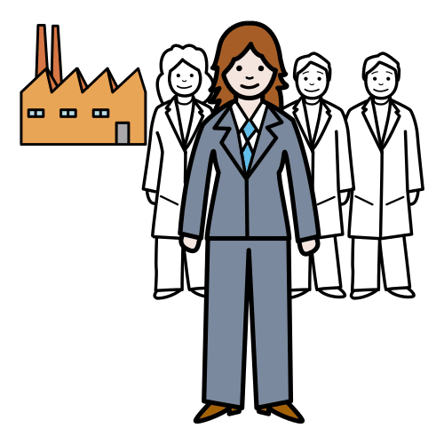

Es consumir bienes y servicios teniendo en cuenta las consecuencias que tendrá ese consumo en el medio ambiente.
Ejemplo:
Debemos tener una actitud de consumo responsable para cuidar nuestro planeta.
Emprendedor/a
Definición:
Persona que dirige una empresa o un objetivo, dedicada a conseguir un cambio social y obtener ganancias para las personas que más lo necesitan.
Ejemplo:
La joven fue emprendedora y aprovechó una oportunidad para crear la empresa de sus sueños.
Empresa
Definición:
Organización de personas y recursos que buscan conseguir un beneficio económico con el desarrollo de una actividad.
Ejemplo:
En la empresa de mi madre hay muchos trabajadores.
Gestionar
Definición:
Organizar un negocio o empresa.
Ejemplo:
Piñonate y Numeria gestionan muy bien su panadería.
Reflexionar
Definición:
Pensar despacio sobre un asunto.
Ejemplo:
Antes de comprar algo debes reflexionar sobre si realmente lo necesitas.
Pronto tendrás la oportunidad de crear y gestionar la empresa que tú elijas. Además, mientras aprendes cómo puedes montar tu propia empresa podrás reflexionar sobre el consumo responsable.
 Definición:
Definición: Definición:
Definición: Definición:
Definición: